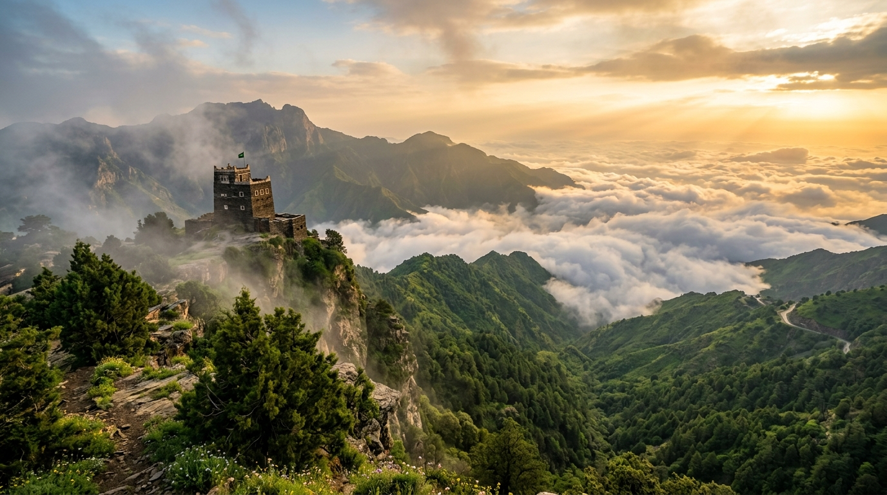

المنصة الذكية المتكاملة لاستكشاف أعلى قمم المملكة، دعم مزارع البن ومناحل العسل العسيرية الأصيلة، وحجز خيرة التجارب والمغامرات السياحية.
تنقل بين أعلى قمم جبال السروات، وشاهد شلالات تنومة، واستكشف قلاع رجال ألمع المبنية من الحجر والكوارتز.
أعلى نقطة جغرافية في المملكة العربية السعودية. حيث تلتقي غابات العرعر الكثيفة بأمواج الضباب، مع تجارب تلفريك معلق يطل على الأخاديد السحيقة، ومسارات هايكنج تنتهي بمشاهد بانورامية تحبس الأنفاس.
تسوّق وتواصل مباشرة مع أصحاب المزارع والمناحل والحرفيين في عسير بدون وسيط، مع ضمان وثيقة الجودة المعتمدة.
اختر مدة إقامتك ونمطك المفضل، وسيقوم النظام الذكي ببناء مسار يومي متكامل يشمل المطاعم الشعبية (الحنيذ والمبثوثة)، المطلات السحابية، ومواعيد الفعاليات.
خطة مكثفة تجمع قمة السودة، وتناول الحنيذ التراثي، وجولة مسائية في ممشى الضباب وشارع الفن.
تشمل السودة ورجال ألمع، ومزارع البن الخولاني في تنومة، وتجربة هايكنج مع مبيت في نزل ريفي.
تغطية شاملة لكامل المنطقة من النماص شمالاً حتى الحبلة ورجال ألمع، مع زيارة الحرفيين ومزارع العسل.
استمتع بالنسيم العليل وإفطار عسيري شعبي (خبز ميفى مع عسل سدر بلدي ورضفة) في أحد المطلات السحابية، ثم خوض جولة في غابات العرعر.
تجربة تذوق أشهر مأكولات عسير في مطاعم الحنيذ التاريخية بمدخل السودة أو طريق محايل.
النزول عبر عقبة الصماء للاستمتاع بإضاءات رجال ألمع الليلية وزيارة متحف ألمع الدائم وتناول القهوة الخولانية.